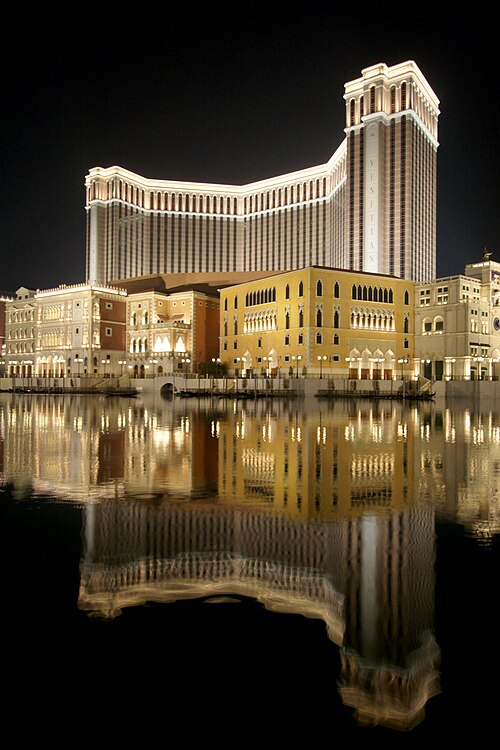
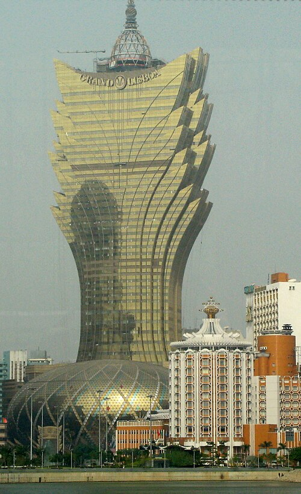
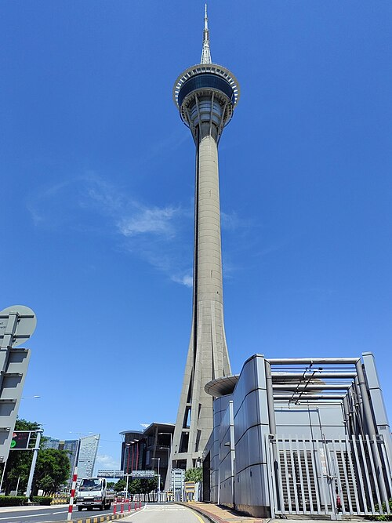

This map shows 19 of the most-searched sights in Macau as photo spots, ranked by how often people search for them: Venetian Macao, Grand Lisboa, Macau Tower, Wynn Macau and Senado Square lead the list. Every spot has a pin on the subject and a phone icon showing where to stand, with tips for shooting it on your phone: which lens to use, how to frame it, a settings tip and the best time of day. Directions and Navigate buttons take you to the standing point on foot or by public transport. 3 spots are free to view; the full map is for members.
The 3 free photo spots
1The Venetian Macao

The Venetian Macao is a huge hotel and casino resort on the Cotai Strip, modelled on its sister resort in Las Vegas. The main tower has 39 storeys and the resort opened on 28 August 2007. Inside there are around 300 shops and an indoor canal, which is what makes it so photogenic: the corridors look like a Venetian street, with a painted sky overhead. This spot's photo is taken indoors, from the small bridge on the 2nd floor beside Lord Stow's Bakery. Look diagonally down the corridor and you get a long, nearly empty view with the painted-sky light falling through the space. One guide suggests it as a quieter alternative to the busy bridge over the Grand Canal. The resort is very large, so allow time to find your way inside. The exterior of the building doesn't appear in this view. If you want the canal, Grand Canal Shoppes shows a gondola under the painted sky with the Venetian-style facades behind it. For a night-time frame of the lit frontage and the red buses, try Starlight Bridge. For the corridor shot, stand still, keep the phone level and let the perspective do the work. Shoot a few frames with and without people walking through, then pick the cleanest.
Where it is: On the Cotai Strip, built on reclaimed land, in the Cotai area of Macau, among a group of large resorts.
Shooting it on your phone
Lens: Start with the default lens (1x) for a natural view down the corridor. Switch to ultra-wide (0.5x) if you want more of the ceiling and the full sweep of the space, but keep the phone level so the lines don't lean.
Where to stand: Stand right at the subject (small bridge on the 2nd floor beside the bakery; shoot diagonally down the corridor). A diagonal view down a nearly empty interior corridor, with the fake-sky light falling through the space.
Framing: Aim diagonally down the corridor rather than straight along it, so the lines lead the eye into the picture. Switch on gridlines and use them to keep the verticals straight. If you also want the canal, Grand Canal Shoppes is the alternative viewpoint, with a gondola under the painted sky.
Settings tip: Tap on the bright painted sky to focus, then slide the exposure down a little so the colours stay rich and the ceiling isn't washed out. Hold the phone steady with both hands; if night mode switches on in dim areas, stay still until it finishes.
Best time: Around 4 PM, when sunlight shines through the painted sky.
2Grand Lisboa

The Grand Lisboa is a 47-floor, 261-metre hotel tower in Sé, and it is the tallest building in Macau. Its casino and restaurants opened in February 2007 and the hotel followed in December 2008. It was designed by the Hong Kong architects Dennis Lau and Ng Chun Man. It is the most distinctive part of Macau's skyline.
The best-known phone photo is taken from Rua Nova à Guia. From the left-hand pavement, the tower rises above low, older residential buildings along the street. That mix of old and new is what makes this the classic postcard view of the hotel. Several guides call it the signature Grand Lisboa shot, and one says the left side of the road gives the best angle.
The street is residential and the traffic is heavy, so stay on the pavement and never step into the road to line up a shot. Start with the default lens (1x) and let the street lead the eye towards the tower. If the top is cut off, switch to the ultra-wide (0.5x) or step back along the pavement. Early morning is quieter and the sun is less harsh, though another guide finds the afternoon light kinder.
If you want a different view, Guia Hill Municipal Park gives an elevated panorama over the peninsula. Nam Van Lake shows the tower across the water, often with city lights reflected in it.
Where it is: The Grand Lisboa is in Sé, on the Macau Peninsula.
Shooting it on your phone
Lens: Start with the default lens (1x). Use the ultra-wide (0.5x) if the top of the tower is cut off, or the telephoto (2x or more) to bring the tower closer above the older buildings.
Where to stand: Stand on Rua Nova à Guia (left-hand sidewalk, with the hotel behind you; one guide says Mei Ka Building is the navigation target). The Grand Lisboa tower rises above low, older residential buildings along the street, creating the old-versus-new contrast that makes this the classic postcard frame. From here the Grand Lisboa lies to the south-west, rising above the low residential buildings along the street. Keep to the pavement because the traffic is heavy.
Framing: Turn on the gridlines and place the tower on one of the vertical lines. Let the street and the older buildings fill the lower part of the frame, so the old-versus-new contrast is clear. If you want another angle, Guia Hill Municipal Park or Nam Van Lake also show the tower.
Settings tip: Tap on the tower to set focus, then drag the exposure slider down slightly so the sky does not wash out. Wipe the lens first, then take a few frames between passing vehicles.
Best time: Early morning is quieter for traffic and the sun is gentler. One guide finds the afternoon light favourable, so you could try both.
3Macau Tower

Macau Tower is the tall, slim tower on the southern side of the Macau peninsula. It stands 338 m high and is used for viewing, entertainment, telecommunications and broadcasting. It was opened on 19 December 2001 and was inspired by the Sky Tower in Auckland, New Zealand. It sits on land created by the Nam Van reclamation project, which added 130 hectares and made the peninsula about 20% bigger.
It photographs well because its shape is simple and clear against the sky, and the open water in front of it gives you room to step back and fit it all in. The best-known place to shoot it is the lakeside promenade at Nam Van Lake. The tower rises above the lake and the waterfront skyline, and on calm evenings the lights are often reflected in the water. As you walk along the promenade the tower stays in view, so you can try several angles before choosing one.
For a phone, turn the phone upright (portrait) so the full height fits, and keep some water in the bottom of the frame for the reflection. Wait for a moment when the surface is still. If you want a different view, Sai Van Bridge shows the tower framed by its reflection in the still lake water beside the bridge, and the Chapel of Our Lady of Penha gives a wider view across the hill and lakes with the tower in the distance. The promenade is the easiest option.
Where it is: Macau Tower is in the Sé area of the Macau peninsula, on reclaimed land in the Nam Van area. The lakeside promenade where you take the photo is a short walk to the north-east, facing the tower across the water.
Shooting it on your phone
Lens: Start with the default lens (1x) to see the tower with the lake and skyline around it. Switch to the ultra-wide (0.5x) if you want more water and reflection, or to the telephoto (2x-5x, depending on your phone) to pick out the tower's shape against the sky.
Where to stand: Stand in Nam Van Lake (lakeside promenade facing the tower). The tower rising above the lake and the waterfront skyline, often with reflections in the water.
Framing: Hold the phone upright and turn on gridlines so the tower stands straight against a vertical line. Leave a band of water along the bottom to catch the reflection. If you have time, Sai Van Bridge or the Chapel of Our Lady of Penha give different views of the tower.
Settings tip: After dark, use night mode and rest your elbows on a railing or hold your breath as you shoot to avoid blur. Tap the tower to focus, then use the exposure slider to bring the brightness down so the tower lights do not blow out.
Best time: Sunset or after dark, when the tower and skyline lights are on and the reflections are strongest.
16 more spots for members
These spots are on the map as grey numbered pins. Where to stand, the phone tips, photos and directions for them come with Explorer membership.
- 4Wynn Macau · members
- 5Senado Square · members
- 6Ruins of St. Paul's · members
- 7A-Ma Temple · members
- 8Macau Fisherman's Wharf · members
- 9Fortaleza do Monte · members
- 10St. Dominic's Church, Macau · members
- 11Guia Fortress · members
- 12Cathedral of the Nativity of Our Lady, Macau · members
- 13Na Tcha Temple · members
- 14St. Lawrence's Church, Macau · members
- 15Lou Lim Ioc Garden · members
- 16Sai Van Bridge · members
- 17Leal Senado Building · members
- 18Our Lady of Penha Chapel, Macau · members
- 19Mandarin's House · members
Get every spot with Explorer membership
Explorer opens every spot on every map in the library: where to stand, how to frame it on your phone and how to get there, plus the Xdatrys Maps app with maps saved on your phone for use without signal. $9.99 a month or $59.99 a year; cancel any time.
Join Explorer Compare free and Explorer
Not ready to join?
Get Pocket Lens, our free daily smartphone travel photography newsletter.
Free, and you can unsubscribe at any time. If the form does not show, sign up on our newsletter page.
Questions
What are the top photo spots in Macau?
The first three on this map are Venetian Macao, Grand Lisboa and Macau Tower. They are ranked by how often people search for them. The full map has 19.
Where should I stand to photograph the Venetian Macao?
Stand right at the Venetian Macao (small bridge on the 2nd floor beside the bakery; shoot diagonally down the corridor). Start with the default lens (1x) for a natural view down the corridor.
When is the best time to photograph the Grand Lisboa?
Early morning is quieter for traffic and the sun is gentler. One guide finds the afternoon light favourable, so you could try both.
How do I get to Macau Tower?
Head for the Nam Van area on the southern side of the Macau peninsula and use a map app to reach Nam Van Lake or Macau Tower.
Credits
Map data © OpenStreetMap contributors (ODbL); base map built with Protomaps from OpenStreetMap data. Photos from Wikimedia Commons, credited under each photo with their licence. Background reading for the free spots: The Venetian Macao, Grand Lisboa, Macau Tower (Wikipedia, CC BY-SA). Access rules and opening times change: check before you go.